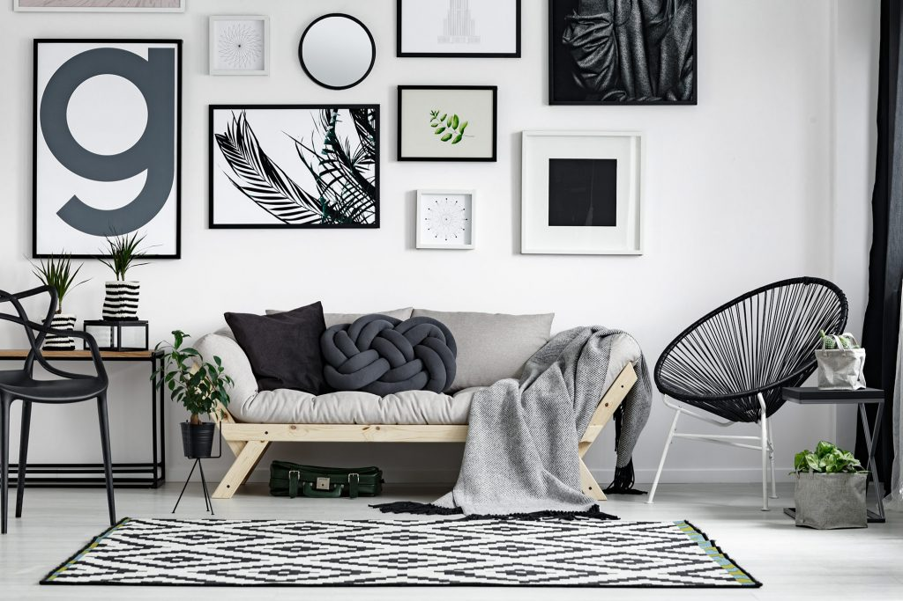

Witajcie drodzy czytelnicy! Jako kobieta i architekt z wieloletnim doświadczeniem, wiem jak ważne jest utrzymanie domu w dobrym stanie oraz jak ważną rolę odgrywa funkcjonalność i harmonia w naszym codziennym życiu. Zrozumienie, że nasz dom jest naszą przestrzenią życiową, w której spędzamy wiele czasu, a także miejscem, które wpływa na nasze samopoczucie, jest kluczowe dla utrzymania go w dobrym stanie. Chciałabym podzielić się z Wami kilkoma praktycznymi wskazówkami, które pomogą Wam utrzymać porządek i zharmonizować przestrzeń w Waszym domu, aby stał się miejscem, które przyczynia się do Waszego dobrego samopoczucia i komfortu życia.
“Czystość i porządek nie są kwestią perfekcjonizmu, ale harmonii.” – Marie Kondo

1. Segregacja i harmonizacja przedmiotów
Jednym z kluczowych aspektów utrzymania porządku w domu jest odpowiednia segregacja i harmonizacja przedmiotów. Starajcie się przechowywać przedmioty według ich funkcji i zastosowania. Na przykład, wszystkie akcesoria kuchenne powinny być przechowywane w kuchni, a nie w salonie. Ponadto, starajcie się zharmonizować przedmioty pod względem kolorów, kształtów i stylu. To pomoże stworzyć spójną i przyjemną atmosferę w domu. Warto również rozważyć użycie pojemników i etykiet, aby jeszcze bardziej ułatwić przechowywanie i znalezienie potrzebnych przedmiotów. Takie podejście nie tylko ułatwi utrzymanie porządku, ale także sprawi, że Wasz dom stanie się miejscem bardziej zorganizowanym i funkcjonalnym.
2. Wykorzystanie przestrzeni
Optymalne wykorzystanie dostępnej przestrzeni to klucz do komfortowego życia. Zastanówcie się nad funkcjonalnością poszczególnych pomieszczeń i wybierzcie rozwiązania, które pozwolą Wam efektywnie je wykorzystać. Na przykład, meble wielofunkcyjne, takie jak kanapy z funkcją spania czy stoły rozkładane, to świetny sposób na zaoszczędzenie miejsca. Pamiętajcie również o pionowych rozwiązaniach przechowywania, takich jak regały czy półki, które pomogą Wam zoptymalizować przestrzeń do przechowywania. Ponadto, nie zapominajcie o wykorzystaniu wnęk i zakamarków, które często są niewykorzystane, ale mogą służyć jako dodatkowe miejsce do przechowywania. Warto również zwrócić uwagę na to, aby nie przesadzić z ilością mebli i przedmiotów w poszczególnych pomieszczeniach, aby uniknąć efektu zagracenia.
3. Unikanie zagracenia
Zagracenie to jeden z największych problemów w wielu domach. Unikajcie gromadzenia przedmiotów, które nie są Wam potrzebne. Regularnie przeglądajcie swoje rzeczy i wyrzucajcie lub oddawajcie te, których już nie używacie. Pamiętajcie, że im mniej przedmiotów, tym łatwiej utrzymać porządek i harmonię w domu. Zamiast trzymać przedmioty “na wszelki wypadek”, zastanówcie się, czy naprawdę będą Wam one potrzebne w przyszłości. Ponadto, utrzymanie porządku w miejscach przechowywania, takich jak szafy czy szafki, również pomoże uniknąć zagracenia. Pamiętajcie, że utrzymanie prostoty i minimalizmu w domu to nie tylko kwestia estetyki, ale także funkcjonalności i dobrego samopoczucia.
4. Przechowywanie rzeczy z głową
Przechowywanie rzeczy w sposób przemyślany to klucz do utrzymania porządku. Wykorzystujcie pudełka, koszyki i pojemniki do przechowywania mniejszych przedmiotów. Pamiętajcie, aby przechowywać rzeczy według kategorii, na przykład wszystkie książki razem, a wszystkie buty w jednym miejscu. To ułatwi Wam znalezienie potrzebnych rzeczy i utrzymanie porządku. Ponadto, warto regularnie przeglądać zawartość pojemników i pudełek, aby upewnić się, że nie gromadzą się w nich niepotrzebne przedmioty. Warto również zainwestować w przezroczyste pojemniki lub etykiety, które pomogą Wam szybko zidentyfikować, gdzie co się znajduje. Pamiętajcie, że przemyślane przechowywanie to nie tylko kwestia estetyki, ale także funkcjonalności i wygody.
5. Regularne sprzątanie
Regularne sprzątanie to podstawa utrzymania domu w dobrym stanie. Ustalcie harmonogram sprzątania i trzymajcie się go. Pamiętajcie, że regularne sprzątanie to nie tylko dbanie o czystość, ale także o zdrowie i dobre samopoczucie. Nie pozwólcie, aby brud i bałagan gromadziły się w Waszym domu. Regularne sprzątanie pozwoli Wam uniknąć wielu problemów, takich jak rozwój pleśni czy kumulacja alergenów. Ponadto, utrzymanie porządku i czystości w domu sprawi, że będziecie się w nim lepiej czuć i chętniej spędzać czas. Pamiętajcie, że dom to miejsce, które powinno sprzyjać relaksowi i odpoczynkowi, a utrzymanie go w czystości i porządku to ważny element tego procesu.
Podsumowanie
W podsumowaniu, dbanie o dom to proces, który wymaga regularności, planowania i trochę dyscypliny. Pamiętając o pięciu kluczowych aspektach: segregacji i harmonizacji przedmiotów, efektywnym wykorzystaniu przestrzeni, unikaniu zagracenia, przemyślanym przechowywaniu rzeczy oraz regularnym sprzątaniu, możecie stworzyć funkcjonalne, przytulne i zdrowe środowisko życiowe. To zadanie może wydawać się czasem trudne i przytłaczające, ale pamiętajcie, że każdy krok w kierunku utrzymania porządku i harmonii w domu to krok w stronę lepszego samopoczucia i jakości życia. Dlatego warto poświęcić czas i wysiłek, aby stworzyć dom, który będzie dla Was źródłem komfortu i spokoju.